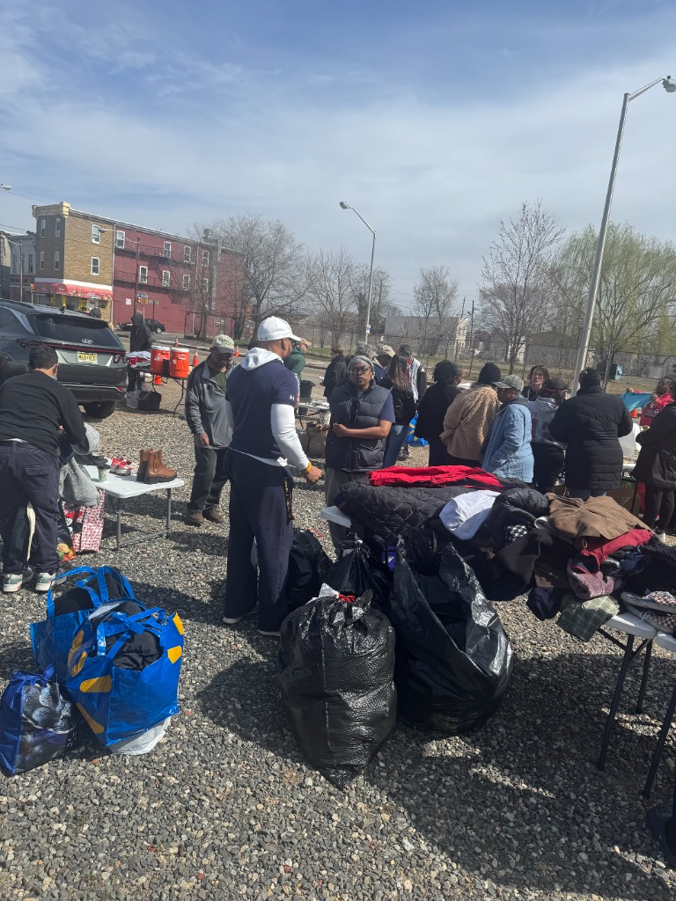
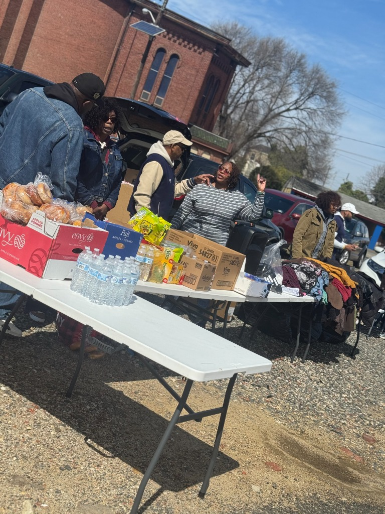

Outreach & What We Do

Prayer & Worship
We believe in the power of prayer to break chains and heal hearts. We gather to worship and pray with those on the streets.

Food & Supplies
Meeting practical needs is a core part of our ministry. We provide food, clothing, and essential supplies to those in need.

Connection & Hope
We offer conversation and a listening ear, reminding everyone that they are seen, known, and loved by God.